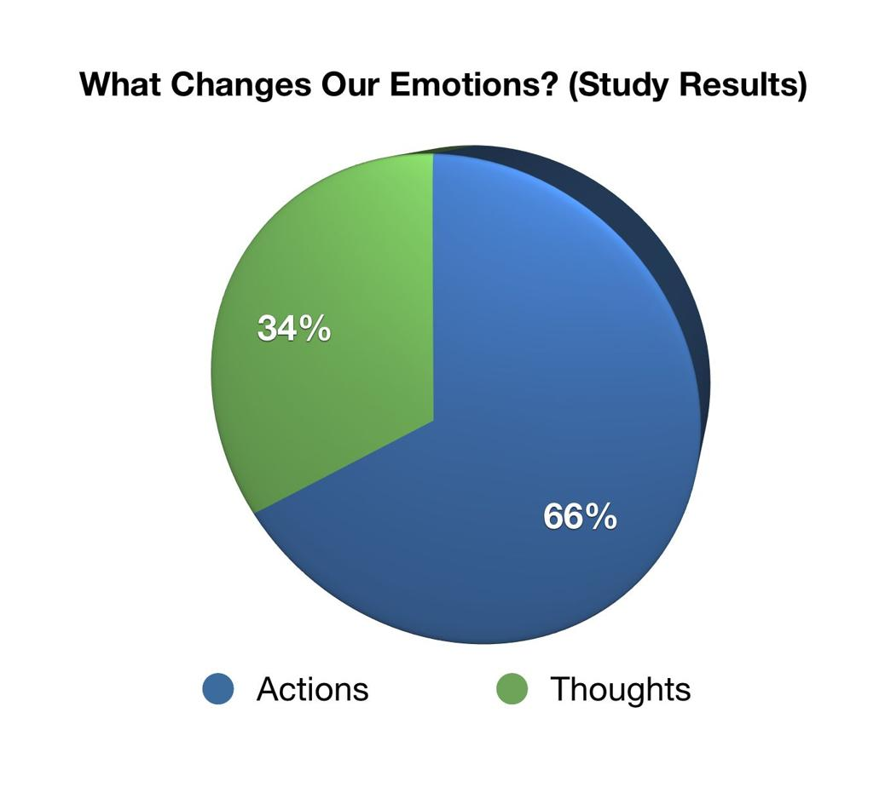

Let’s set aside the topic of perfectionism for a moment to tackle a serious and relevant issue: How do we change? The ultimate goal of this book is to help you become an imperfectionist, but this book approaches change differently from most. The books that tell you to “be free” and “let go” without any kind of concrete, actionable strategy are of questionable (at best) value. They’ll make you feel good, but if your brain doesn’t change, neither do you. I won’t say it’s impossible to achieve lasting change based on a motivational spark from such a book, but it’s unlikely.
If you come to this book having read Mini Habits, you’re already familiar with the problem of using motivation as a strategy for taking action, and you may be tempted to skim this section. There is, however, some new information in this section that wasn’t in Mini Habits, and it’d be a good idea to review it anyway because it’s important. It explains why the solutions (which start in the last section of the next chapter) will be converted into action-first mini habits for application.
Is Motivation Enough?
The most popular approach to change is fatally flawed because it’s a “flash in the pan” strategy and transformation doesn’t happen quickly. As mentioned in Mini Habits, for a lasting change to occur, the brain must have enough repetition over time to form new neural pathways. If this doesn’t happen, your brain and behavior will revert to their old ways.
Have you ever tried to “get motivated” to do something positive in your life? If I were to form a single phrase to describe “getting motivated,” it would be emotional manipulation. You currently feel “blah” about doing something but want to feel “rah rah” about it so that you’ll want to do it. For many tasks, this means thinking about the benefits until you want to take action.
Whatever the means, the goal is to change the way you feel about the behavior. This is desirable, because if you get yourself to want to do something, it’s easy, feels natural, and doesn’t require willpower. It isn’t smart, though, because it doesn’t always work. In the case of books about perfectionism, encouraging readers with sentiments of “You are good enough” or “Your work is good enough” could temporarily quell the domineering grasp of perfectionism on their minds and make them feel empowered, but it’s not a lasting solution.
“Getting motivated” begins in the mind. To better understand why this is the wrong place to begin, let’s talk about how emotions, motivation, action, and habits relate to each other.
Emotions, Motivation, Action, and Habits
Emotions motivate us to take action, but the reverse is also true: emotions follow action. Actions make us feel, and feelings make us act. While most of the world focuses on the fact that feeling can cause doing, fewer think about how doing can cause feeling, which can then cause more doing.
For example, imagine a husband and wife who are in love. They feel strongly for each other, and these feelings make them want to kiss each other. This is the flow we see most: emotions into action.
There’s a story of a husband who tells his wife he wants a divorce because he doesn’t love her anymore. She’s upset, but before she signs the divorce papers, she requests that he carry her from their bedroom to the front door every morning, as he had carried her into her bridal room on their wedding day. He laughs at the odd request and agrees. But as the days go on, this act of carrying her increases the intimacy he feels for her, their romance is rekindled, and they stay together. According to Snopes.com, this story is a legend,21 but the concept is true: our actions greatly impact how we feel, and the effect is so powerful that it changes us even if we don’t want or mean for it to.
People like to say that love is an action and not an emotion, but it’s really both, and they tend to “self-align” with each other. When you act lovingly, you’ll feel it more. But when you feel no love, you’re not likely to act lovingly. What’s the best way to approach this? There are several reasons to believe that starting with action is the best strategy.
In an experiment by social psychologist Amy Cuddy, one group was instructed to assume a high-power pose and another a low-power pose, both for two minutes. The high-power pose group members stood tall and placed their hands on their hips or held their arms out (open, wide, and taking up space). The low-power pose group members folded their arms inward and slouched (closed, confined, and taking up less space).
After just two minutes, the high-power pose group’s testosterone levels increased 20%, and their cortisol levels decreased 25%. The high-power group was found to be far more willing to take risks than the low-power posers in subsequent tests. Increased testosterone makes us more willing to take risks and be assertive, while decreased cortisol makes us less anxious and stressed. As for the low-power pose group, their pose had the inverse effect: testosterone dropped 10%, and cortisol increased 15%.22
“Two minutes led to these hormonal changes that configure your brain to basically be either assertive, confident, and comfortable, or really stress-reactive and feeling kind of shut down.” 23
~ Amy Cuddy
This is a powerful, scientific piece of evidence that shows how profoundly even simple actions can impact the way we feel on a chemical level!
There’s even more direct evidence that the action-first strategy is superior in regard to changing how we feel (and increasing motivation). The Duke University journal study mentioned earlier found that emotional change was almost twice as likely to be caused by actions the study participants had taken as opposed to thoughts.24

Now, we were talking about feeling and doing, and this study talks about thinking versus doing. Thinking is the standard way people try to change their feelings in the “get motivated” strategy. They won’t try action until they’re in a mental and emotional state in which action is attractive to them.
Another problem: Thoughts are tainted by the very emotions they’re attempting to eradicate, which can make emotional change a highly difficult endeavor. This is why people struggle with motivation. If the feeling isn’t there, it’s not as simple as choosing to get motivated or thinking about your goals. It can work on occasion, but it will not work every time.
It’s unfortunate how popular this strategy is, because it’s much easier to generate motivation by acting first. To a motivation-driven person, this seems invalid based on their flawed premise that we can’t take action if we’re not motivated to do it. We also have willpower, which grants us the ability to act against our feelings. If action through willpower is something we can do with regularity, then it matches the data as a superior starting point for generating the most motivation and taking more action in an area.
The main point here is that action itself is the best starting point for more action, while trying to think your way into more motivation is an unreliable and ineffective way to create forward momentum.
In addition, the “get motivated” strategy assumes that you’ll always want to get motivated. What if your ultimate goal is motivation to exercise, but after a long day of work, you don’t even want to be motivated to exercise and thus don’t try to increase your motivation? “Getting motivated” is a strategy that attempts to build from a point of weakness. It’s better to start with strength.
What could possibly be a strength to build from when you’re unmotivated to take action? There isn’t much. This is why people get stuck. But you can create a position of strength by using a negligible amount of willpower to take one small step forward or to complete a “mini goal.” The basis of Mini Habits was to leverage this process into its most potent application—forming habits.
Some will point out that we need at least a small bit of motivation to do anything except autonomous functions such as breathing, and this is true. But this is not the type of motivation we’ve been talking about. Motivation has two meanings that are quite different from each other, and we need only one of the two kinds in order to take action.
The Two Types of Motivation
Did you know that it’s possible to be motivated to write a book but not be motivated to write in your book? How? The first motivation means having a general reason and desire to write a book. The second type is moment-by-moment motivation, which varies greatly based on context and your emotional state. I think we can all relate to wanting to do something in general but changing our minds when the time comes for action!
The type of motivation we don’t need is the type that fluctuates. Its constant fluctuation is exactly what makes it unreliable, and it has no doubt killed some of your goals in the past. If you’re the type of person who sets a goal and goes one to six weeks strong with it, only to quit suddenly for various reasons, you’re well versed in how fluctuating motivation kills goals.
You’ll hear motivation talked about as a single concept because people use their reason to do something as their emotional spark to feel like doing it. I’m not doubting the logic of this. It’s not a stretch to believe that your reason to fly might motivate you to jump in the pilot seat. It often works. But think about what we just covered.
To rely on the connection between your reason to do something and your current desire to do something means that when you don’t feel it, you must think about why you should write the book, work out, clean your house, or meditate. And yet, the studies above demonstrated the most powerful cross-connection to be between emotions and action, as action changed emotions about twice as often as thoughts did. This doesn’t automatically mean that actions are better, but it probably does.
Consider Cuddy’s study that showed how our bodies react chemically to body language. The evidence is all around us that action creates a more powerful and reliable emotional response in us than thoughts do. Given that we experience far more thoughts than actions per day and actions still impacted emotions twice as often in the study, it’s a good indication that the action-to-emotion connection is stronger.
To think that the motivational idea of If I have a reason to, desire will eventually follow works every time is naive and goes against the fickle nature of human feelings. We must not underestimate the power of a bad, anxious, or lazy mood! Let me put it this way: When you treat how you feel as the deciding factor of what you do, you will be a slave to it. You will try so many motivational techniques, but in the end, your results will be as unreliable as your feelings.
All this is fascinating when you consider the rampant popularity of “chasing motivation.” According to the sales rankings of best-selling books, motivation is the seventh-most popular nonfiction category and the second-most popular self-help category on Amazon.25 (There’s not even a category for “willpower,” “discipline,” or “small steps.”) This flawed way of thinking is well ingrained in our society. Everywhere you look, people are seeking or teaching motivational techniques, and it genuinely saddens me.
People who have successfully changed their lives have figured out that when you start doing something, your emotions follow suit.
Never forget this: It’s easier to change your mind and emotions by taking action than it is to change your actions by trying to think and feel differently.
Motivation versus Habits
There is another problem with motivation-based action, which is its incompatibility with habits. The Texas study mentioned earlier found that people were notably less emotional about habitual behavior than non-habitual behavior. As a behavior is repeated, the subconscious recognizes the pattern, the neural pathway is strengthened, and our emotions toward the behavior decrease. This is intuitive for us, because what’s more electrifying than your first kiss? What’s more delicious than your first taste of pizza? Or even your first slice of pizza compared to the fourth slice? Repetition is how we learn, but as newness fades, so do our emotions toward it. There are other factors that can cause emotional variation, but all things being equal, habits decrease emotion.
Now, imagine a person riding an emotion-driven wave of motivation, trying to create a habit (such as a New Year’s resolution). The further they go toward forming the habit, the weaker the wave will get, until they’re left motionless and are then tasked with swimming (using willpower) or quitting. This is a reasonable explanation for why people frequently quit new goals after one to six weeks. At that point in time, the transition to the subconscious is most likely underway just as emotion (and motivation) is waning.
Motivation should more or less be ignored if you want your changes to last. This is not to say that motivation isn’t valuable. On the contrary, both forms of it are essential for building a great life. We’re strictly talking about starting strategies to consider for our upcoming perfectionism solutions, because having a reliable starting strategy is what enables us to keep going with our desired changes.
We just covered why we’ll use action-first strategies to apply our perfectionism solutions. There is one more requirement for successful change—targeted solutions. For example, if you did random exercises hoping for a six-pack, you could very well be wasting your time. You need to know what behaviors lead to six-pack abs.
Sustainability tends to be the more difficult part of the equation because solutions are usually obvious: to get in shape, eat healthy food and exercise, and to get good at snowboarding, practice snowboarding. But perfectionism is so abstract and complex that targeted solutions are not immediately obvious. We can’t say, “Just don’t try to be so perfect!” This is easier said than done, and it is not a targeted solution.
In the second half of the book, we’ll combine these two factors of change and look at action-first solutions to specific problems of perfectionism. Before we get there, the next chapter will cover the general mindset and freedom that imperfectionism brings. Here is where the fun begins!